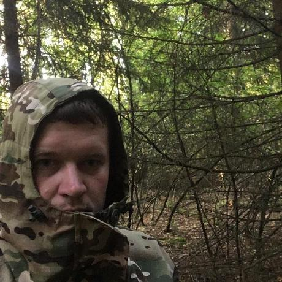

Aliaksandr Voitsik


<!-- <!DOCTYPE html>
<html lang="en">
    <head>
        <meta charset="utf-8">
        <link rel="stylesheet" href="style.css">
        <link rel="icon" href="icon.png" type="image/png">
        <title>CV#3. Cross-Check</title>
    </head>

    <body>
        <header>
            <nav class="nav">
                <ul class="nav-list">
                  <li class="nav"><a href="#contacts">Contacts</a></li>
                  <li class="nav"><a href="#aboutme">About Me</a></li>
                  <li class="nav"><a href="#skills">Skills</a></li>
                  <li class="nav"><a href="#education">Education</a></li>
                  <li class="nav"><a href="#language">Language</a></li>
                </ul>
              </nav>
        </header>
        <br><hr>

        <table class="photo">
            <td style="text-align: center;"></td>
            <td style="text-align: left;">  
                <h1>Aliaksandr Voitsik</h1>
                <p class="prof">Front-End Developer</p>
            </td>
        </table>
        <br>
        <div class="obl">

            <div>
                <table class="info">
                    <td id="contacts">
                        <h2>Contacts:</h2>
                        <ul>
                            <li>Address: st. Chkalov, Lyahovichi town, Belarus</li>
                            <li>Email: mr.kolmm@gmail.com</li>
                            <li>Phone: +375 (29) 200-98-25</li>
                            <li>GitHub: TreeJuns</li>
                            <li>Telegram: @TreeJuns</li>
                        </ul>
                    </td>
                    <td id="aboutme">
                        <h2>About Me:</h2>
                        <ul>
                            <li>I am 23 years old. I am a second year student at BSUIR. Prior to that, he graduated from the Baranovichi College of Light Industry as a technician-programmer. After college he went to the army, where he safely forgot half of what he taught. Now I am not working in my specialty. Now I am trying to acquire new knowledge in programming.</li>
                        </ul>
                    </td>
                </table>
            </div>
            <hr><hr>
            <div>
                <table class="info">
                    <td id="skills">
                        <h2>Skills:</h2>
                        <ul>
                            <li>HTML5</li>
                            <li>CSS3</li>
                            <li>C++</li>
                            <li>JavaScript(Basics)</li>
                            <li>PHP</li>
                            <li>Git</li>
                        </ul>
                    </td>
                    <td id="code">
                        <h2>Code:</h2>
                        <pre>
                            <code>
            function sum(a, b) 
            { 
                return a + b; 
            } 
            let result = sum(1, 2); 
            alert( result );
                            </code>
                        </pre>
                    </td>
                </table>
            </div>
            <hr><hr>
            <div>
                <table class="info">
                    <td id="education">
                        <h2>Education:</h2>
                        <ul>
                            <li><b>College:</b> Baranovichi State College of Light Industry, specialty technician programmer</li>
                            <li><b>University:</b> Belarusian State University of Informatics and Radioelectronics, specialty software engineer</li>
                        </ul>
                    </td>
                    <td id="language">
                        <h2>Language:</h2>
                        <ul>
                            <li><b>Russian</b> - national language</li>
                            <li><b>Belorussian</b> - national language</li>
                            <li><b>English</b> - A1(I study by the availability of time)</li>
                            <li><b>Polish</b> - A1</li>
                        </ul>
                    </td>
                </table>
            </div>

        </div>
        <br><br>
        <hr>
        <footer>
            <a id="rs" href="https://rs.school/js/"></a>
            <p id="year">2022</p>
            <a id="account" href="https://github.com/TreeJuns"><b>GitHub</b></a>
        </footer>
    </body>
</html> -->
